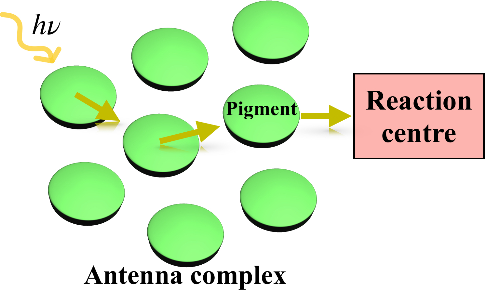
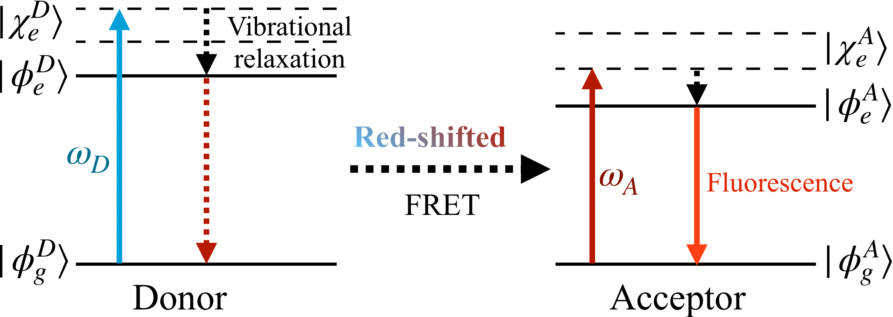
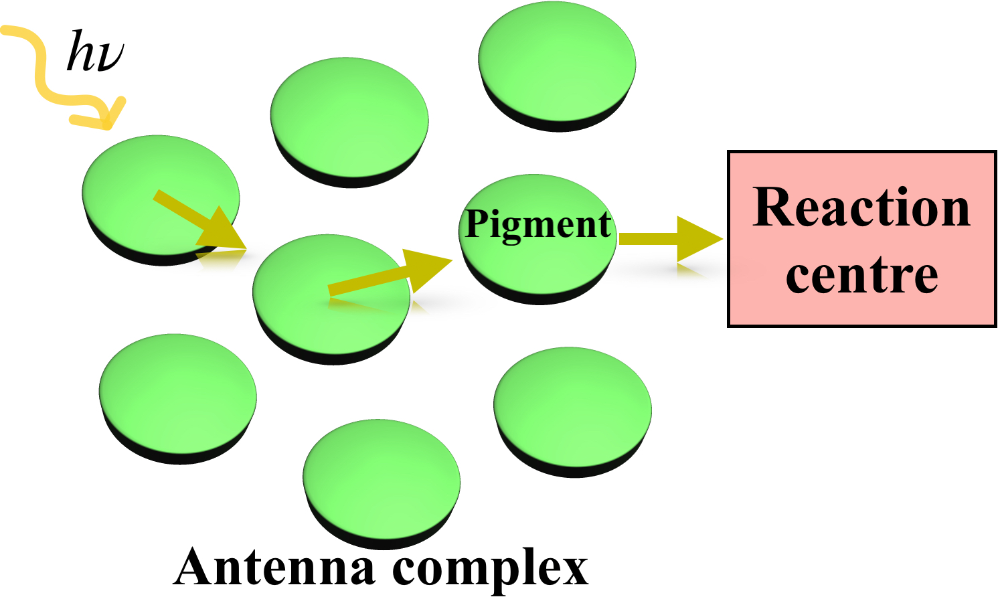
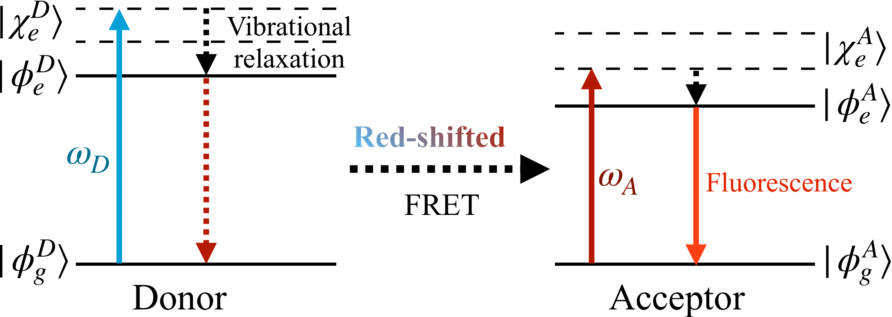
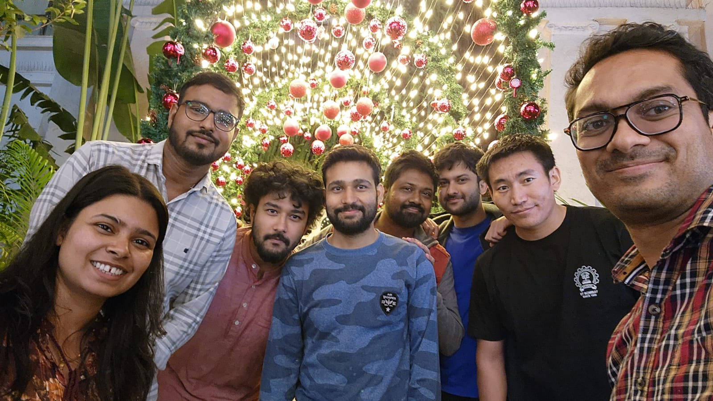
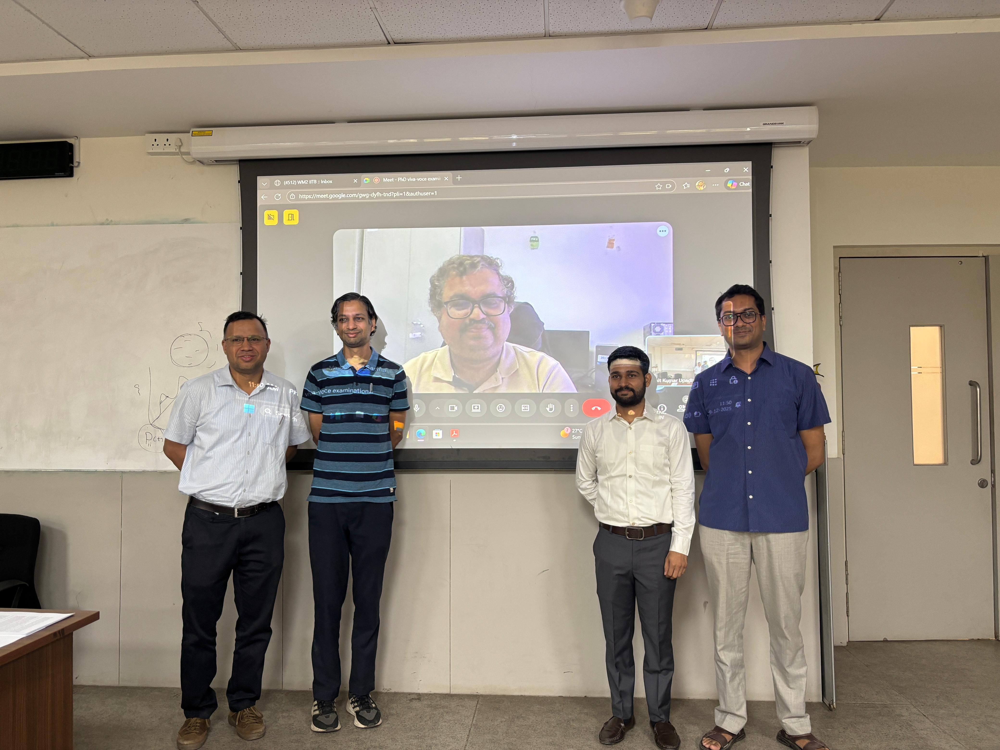

Welcome
I am a Ph.D. graduate from the Department of Energy Science and Engineering at IIT Bombay, under the supervision of Prof. Karthik Sasihithlu. My research focuses on quantum many-body physics, open quantum systems, and excitation energy transfer in complex molecular networks.
I am interested in expanding my work toward cavity QED and polaritonic transport to understand light–matter hybrid states under electronic and vibrational strong coupling. I also look forward to implement machine learning based approaches for deeper insights into chemical physics.
I am actively seeking postdoctoral or industrial research opportunities.
Download CVEmail: upadhyay[dot]amit1996[at]gmail[dot]com · LinkedIn
Research Highlights
 



Research Interests
- Electronic excitation dynamics in quantum photosynthesis.
- Open quantum systems theory and environment-assisted transport.
- Quantum coherence and energy transfer efficiency.
- Polaritonic and cavity-mediated transport phenomena.
- Quantum phase transition and information.
Publications
- A. K. Upadhyay and K. Sasihithlu, “Analyzing Coherence Effects in Multisite Electronic Excitation Transport Using the Incoherent Born-Markov Rate Model.” J. Phys. Chem. B 2025, 129, 11387-11394.
- A. K. Upadhyay and K. Sasihithlu, “Electronic Excitation Transfer Dynamics in a 3-Site System Using an Incoherent Born-Markov Rate Model.” ChemPhysChem 2025, 26, e202500029.
- A. K. Upadhyay and K. Sasihithlu, “Tunability in 3-Site Electronic Excitation Transfer Dynamics: Insights into the Role of Perturbative Coupling.” J. Phys. Chem. B 2024, 128, 4047-4052.
Education
- M.Sc. + Ph.D. Dual Degree in Energy Science and Engineering, IIT Bombay (2017–2025)
- B.Sc. (Hons) in Physics, Atma Ram Sanatan Dharma College, University of Delhi (2014-2017)
- HSC (12) and SSC (10), Jawahar Navodaya Vidyalaya, Rudrapur (2011-2014)
Research Experience
- Research Associate in Energy Science and Engineering, IIT Bombay (May 2025 – November 2025)
Conferences
- Youth Scientist Conclave on Topics in Quantum Dynamics, at IIT Bombay (Mumbai) (July 2024)
- International Conference on Quantum, Atomic, and Molecular Physics at University of Strathclyde, Glasgow (UK) (September 2023)
- Quantum coherent dynamics: turbulence, non-equilibrium and interactions, at Institut d'Estudis Catalans, Barcelona (Spain) (September 2023)
- International Conference on Photonics, at IISc Bangalore (Bengaluru) (July 2023)
- International Conference on Progress in Quantum Science and Technologies, at IIT Madras (Chennai) (January 2023)
Gallery

